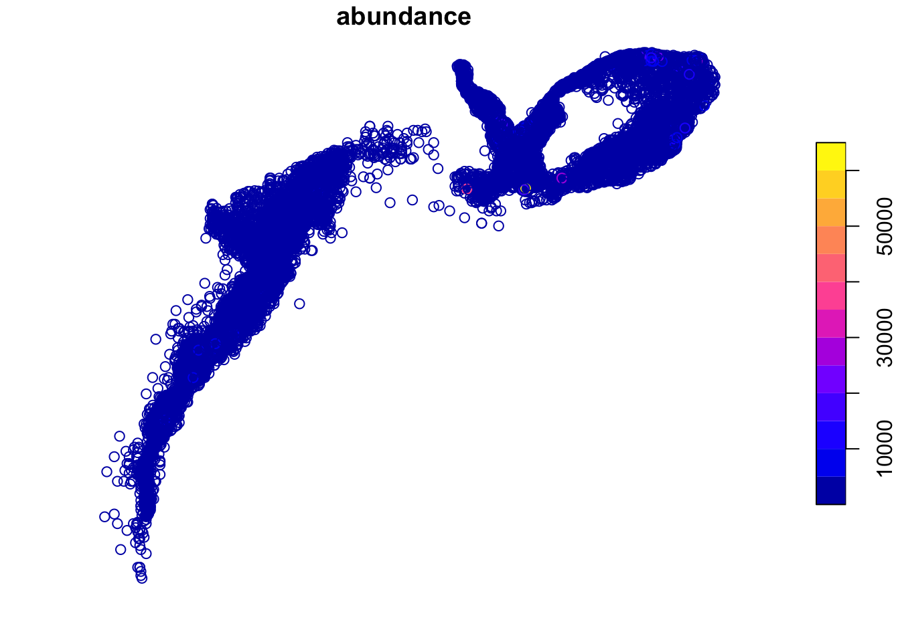
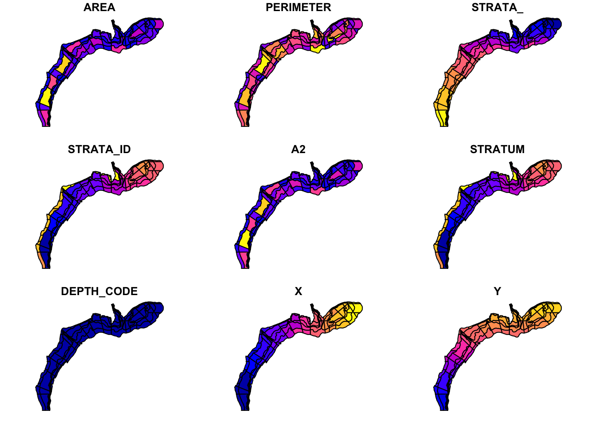
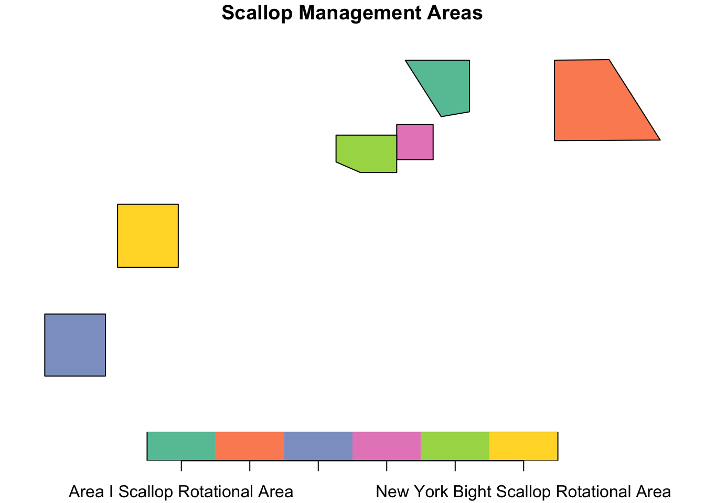
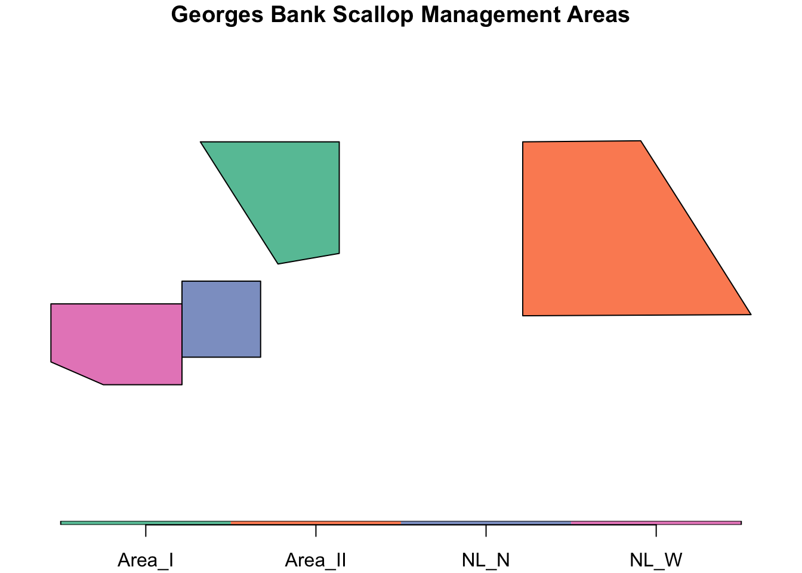
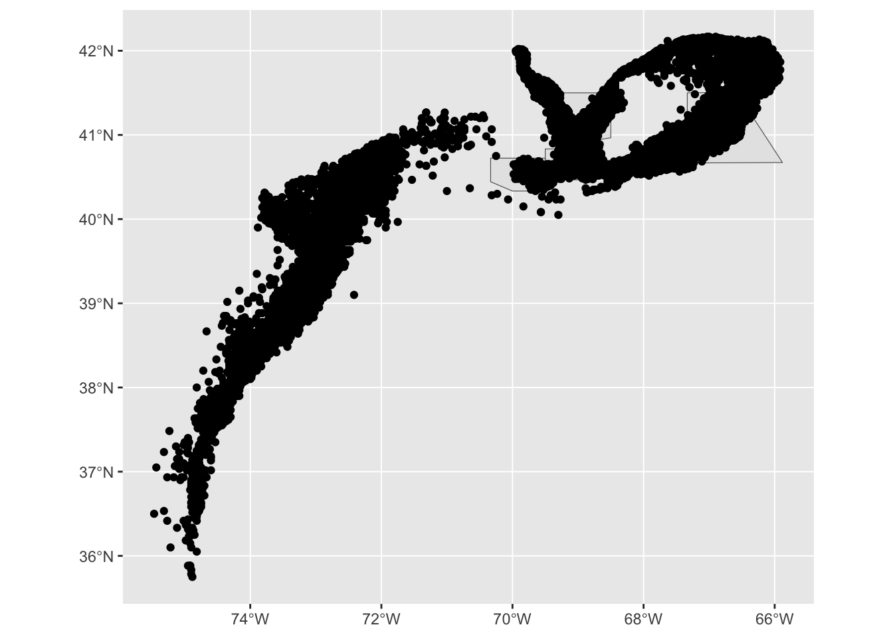
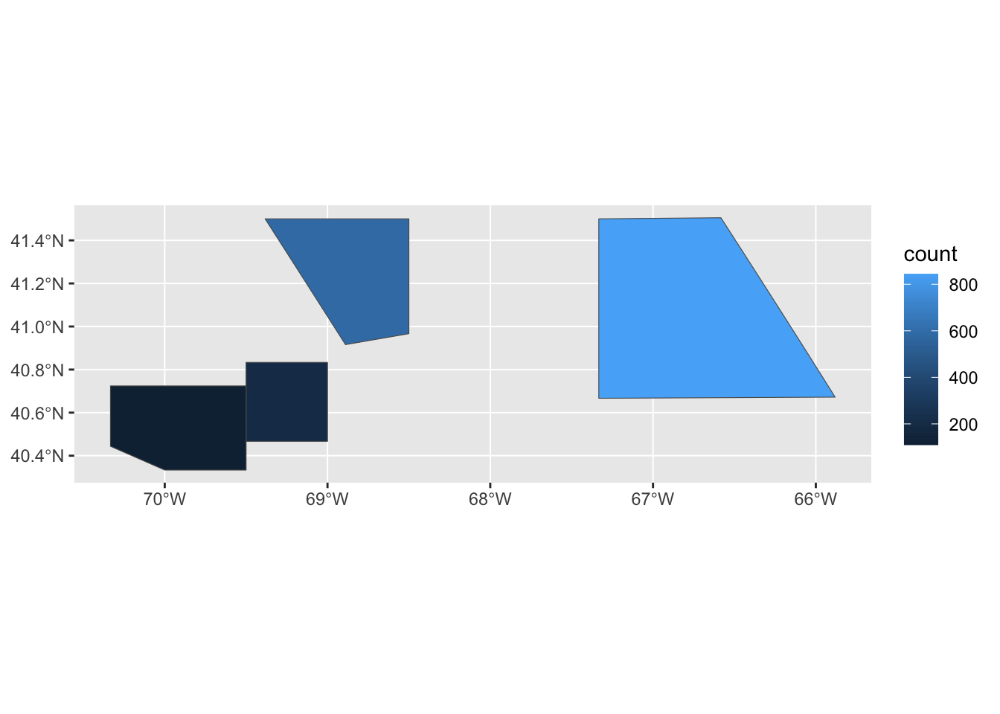

library(sf)
library(NEFSCspatial)
library(tidyverse)Spatial Exploration
Spatial data exploration
Ruby Krasnow
Last modified: June 24, 2023
Load packages
SMAST scallop data (HabCam)
# SMAST Scallop data-----------------------------------------------------------------
# The data I want, but averaged across years
st_layers("data/SMAST_SCALLOP/SMAST_Scallops.gdb")Driver: OpenFileGDB
Available layers:
layer_name geometry_type features fields crs_name
1 AveragePresenceAbundance Multi Polygon 920 32 NAD83test<- st_read("data/SMAST_SCALLOP/SMAST_Scallops.gdb")Reading layer `AveragePresenceAbundance' from data source
`/Users/rubykrasnow/Downloads/lab_notebook/data/SMAST_SCALLOP/SMAST_Scallops.gdb'
using driver `OpenFileGDB'
Simple feature collection with 920 features and 32 fields
Geometry type: MULTIPOLYGON
Dimension: XY
Bounding box: xmin: -75.14375 ymin: 36.39138 xmax: -66.32867 ymax: 42.49109
Geodetic CRS: NAD83class(test)[1] "sf" "data.frame"print(test[1:15], n = 3)Simple feature collection with 920 features and 15 fields
Geometry type: MULTIPOLYGON
Dimension: XY
Bounding box: xmin: -75.14375 ymin: 36.39138 xmax: -66.32867 ymax: 42.49109
Geodetic CRS: NAD83
First 3 features:
F100km_Id F1000Km_Id AreaKm Stations DepthAve ScallopAve SeaStarAve CrabAve
1 1024 28 100 2 20.00 0.00 4.5 0.000000
2 1097 28 100 4 20.85 0.75 4.0 0.000000
3 1098 28 100 3 18.50 0.00 5.0 0.333333
HerCrabAve SandDolAve BryHydAve HolesAve MnSnailAve SpongeAve FlatFishAv
1 0 0 0 0 0
2 0 0 0 0 0
3 0 0 0 0 0
Shape
1 MULTIPOLYGON (((-75.02578 3...
2 MULTIPOLYGON (((-74.91487 3...
3 MULTIPOLYGON (((-74.9217 36...par(mar = c(0,0,1,0))
plot(test[6])
NEFSC scallop survey data: time series, but doesn’t include predation info
# NEFSC scallop survey data - through 2015 -----------------------------------------------------------------
st_layers("~/Downloads/Fish/Fish.gdb")Driver: OpenFileGDB
Available layers:
layer_name geometry_type
1 EFH_Overlay_Final_Jan2015 Multi Polygon
2 HighlyMigratorySpeciesEFHOverlay Multi Polygon
3 ScallopBiomass Point
4 SeaScallops2016_2018PotentialReproductiveOutput Multi Polygon
5 fras_aux_SeaScallops2016_2018PotentialReproductiveOutput NA
6 fras_blk_SeaScallops2016_2018PotentialReproductiveOutput NA
7 fras_bnd_SeaScallops2016_2018PotentialReproductiveOutput NA
8 fras_ras_SeaScallops2016_2018PotentialReproductiveOutput NA
9 vat_SeaScallops2016_2018PotentialReproductiveOutput NA
features fields crs_name
1 1713 44 WGS 84 / Pseudo-Mercator
2 42474 45 NAD83
3 16057 8 NAD83
4 1 3 WGS 84
5 2 3 <NA>
6 63 6 <NA>
7 1 18 <NA>
8 1 3 <NA>
9 3 2 <NA>fish<- st_read("~/Downloads/Fish/Fish.gdb", layer="ScallopBiomass")Reading layer `ScallopBiomass' from data source
`/Users/rubykrasnow/Downloads/Fish/Fish.gdb' using driver `OpenFileGDB'
Simple feature collection with 16057 features and 8 fields
Geometry type: POINT
Dimension: XY
Bounding box: xmin: -75.63333 ymin: 35.55 xmax: -65.916 ymax: 42.16667
Geodetic CRS: NAD83# st_geometry(fish)
# class(fish)
par(mar = c(0,0,1,0))
plot(fish[6])
fish<- fish %>%
filter(year_ > 1966) %>%
mutate(YEAR = year_, .keep = "unused") %>%
na.omit()# NEFSC Spatial package - maps of shellfish strata -----------------------------------------------------------------
scallops<-NEFSCspatial::Shellfish_Strata
plot(scallops)
testGIS <-st_read("~/Downloads/lab_notebook/data/Scallop_Rotational_Areas_20230419/Scallop_Rotational_Areas_20230411.shp")Reading layer `Scallop_Rotational_Areas_20230411' from data source
`/Users/rubykrasnow/Downloads/lab_notebook/data/Scallop_Rotational_Areas_20230419/Scallop_Rotational_Areas_20230411.shp'
using driver `ESRI Shapefile'
Simple feature collection with 6 features and 23 fields
Geometry type: POLYGON
Dimension: XY
Bounding box: xmin: -8274749 ymin: 4602998 xmax: -7333888 ymax: 5087139
Projected CRS: WGS 84 / Pseudo-Mercatorplot(testGIS["AREANAME"], main="Scallop Management Areas")
testGB <- testGIS %>%
filter(GARFO_ID != "G000610" & GARFO_ID != "G000611") %>%
select(AREANAME, GARFO_ID, CFRPARA, FRCITE, FRDATE, SOURCE, COMMNAME, geometry) %>%
mutate(NAME = recode(AREANAME, "Area I Scallop Rotational Area" = "Area_I",
"Area II Scallop Rotational Area" = "Area_II",
"Nantucket Lightship North Scallop Rotational Area" = "NL_N",
"Nantucket Lightship West Scallop Rotational Area" = "NL_W"))
plot(testGB["NAME"], main="Georges Bank Scallop Management Areas", key.pos=1, key.width = 0.1, key.length = 0.9)
Testing and adjusting CRS:
# Adjust CRS of the map of protected areas to match scallop survey CRS
# st_crs(fish) - NAD83 (EPSG:4269)
# st_crs(testGB) - WGS 84 / Pseudo-Mercator (EPSG: 3857)
testGB2<- st_transform(testGB, crs = "EPSG:4269")
st_crs(testGB2) # now they are both NAD83Coordinate Reference System:
User input: EPSG:4269
wkt:
GEOGCRS["NAD83",
DATUM["North American Datum 1983",
ELLIPSOID["GRS 1980",6378137,298.257222101,
LENGTHUNIT["metre",1]]],
PRIMEM["Greenwich",0,
ANGLEUNIT["degree",0.0174532925199433]],
CS[ellipsoidal,2],
AXIS["geodetic latitude (Lat)",north,
ORDER[1],
ANGLEUNIT["degree",0.0174532925199433]],
AXIS["geodetic longitude (Lon)",east,
ORDER[2],
ANGLEUNIT["degree",0.0174532925199433]],
USAGE[
SCOPE["Geodesy."],
AREA["North America - onshore and offshore: Canada - Alberta; British Columbia; Manitoba; New Brunswick; Newfoundland and Labrador; Northwest Territories; Nova Scotia; Nunavut; Ontario; Prince Edward Island; Quebec; Saskatchewan; Yukon. Puerto Rico. United States (USA) - Alabama; Alaska; Arizona; Arkansas; California; Colorado; Connecticut; Delaware; Florida; Georgia; Hawaii; Idaho; Illinois; Indiana; Iowa; Kansas; Kentucky; Louisiana; Maine; Maryland; Massachusetts; Michigan; Minnesota; Mississippi; Missouri; Montana; Nebraska; Nevada; New Hampshire; New Jersey; New Mexico; New York; North Carolina; North Dakota; Ohio; Oklahoma; Oregon; Pennsylvania; Rhode Island; South Carolina; South Dakota; Tennessee; Texas; Utah; Vermont; Virginia; Washington; West Virginia; Wisconsin; Wyoming. US Virgin Islands. British Virgin Islands."],
BBOX[14.92,167.65,86.45,-40.73]],
ID["EPSG",4269]]Mapping together:
# Map of points within polygons
ggplot() + geom_sf(data = testGB2) + geom_sf(data = fish)
# Intersection (first polygons, then points)
interCounts <- st_intersects(testGB2, fish)
# Add point count to each polygon
testGB2$count <- lengths(interCounts)
# Map of number of points within polygons
ggplot(testGB2) + geom_sf(aes(fill = count))
Identifying polygons containing points:
# Intersection (first points, then polygons)
interID <- st_intersects(fish, testGB2)
# Adding column areaname with the name of
# the areas containing the points
fish$areaname <- testGB2[unlist(interID), "AREANAME",
drop = TRUE] # drop geometry
fish